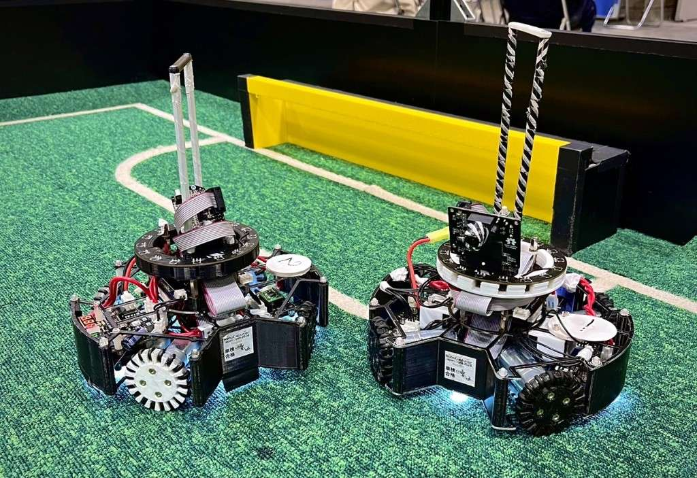

TOINIOT² Blog
全国大会のふり返り
2024-05-21 Writer: 010
こんにちは。今回の記事は全国大会のふり返りについてです。
はあ？今頃？って思った方、間違ってません。僕もそう思ってます。実は大会の後、いろいろとありまして…なかなか記事にできていませんでした。
とは言え文章自体は3月に書いたものなんで安心してください()
さて、早速本題に入っていきたいところですが、ひとつだけ。今回は試合ごとの分析については書いていません。対戦相手の方が書いてくれているものもありますし(笑)
どちらかというと、大会全体を通して僕が感じたことをつづっていければなーと思っています。

①1試合目こそ確実に。
本番一発目となる１試合目は、たとえ練習でうまくいっていたとしても予期しないトラブルが起こりがちです。しかし、相手もそれは同じ。まだ1試合目だから…などと思わずにここで勝利をつかんでおくと、調子が出だした午後がかなり楽になります。
というのも、試合数が決して多いとは言えないRCJにおいて、1勝の重みは段違い。仮に2試合目以降で本調子になったとしても、最初の負けが大きく順位にのしかかってくることはよくあります。
実際、僕たちも2023年度の関西ブロックで、序盤の修正不足が仇となり(もちろんそれだけではありませんが)、結果的に全国大会出場を逃しました。ただ、現実的に考えて、あれだけのチーム数がいる中で試合の開始までに満足のいく調整をするのはなかなか難しいです。
少しでも調整の時間を増やすためにも前日入りするのは前提として、その日の車検も早く終わらせたいところ。狙うはもちろん一発合格です(昨年の最速記録は26分だとか…)。
車検で主にみられるのは重さやサイズのほか、色や発光・反射箇所、そして部品のゆるみです。前者2つは客観的な数字によって決められるのに対し、残りはどうしても車検員の方によって判断に多少のばらつきが出てしまいます。
なので、極力判定が緩いスタッフの方を選ぶようにしまs…嘘です。すみません。これに関しては、とにかく見える範囲は黒く塗って、手の届く範囲は一度すべて締めなおすに限るかな、と。
特に色や光はこれくらいなら大丈夫、と思わずに１ｍｍでも見えれば組み立ての時に先にマステを貼ったり色を塗ったりしておくことを強くおすすめします。後から見えるけれど届かない、なんてことになったらそれこそ時間のロス以外何でもないので。
そもそも青や黄色を含む製品を使わないようにする、自作するというのも一つの手かもしれませんね。
②すべての予備部品を。
これはもう、言葉の通りです。時間があれば3機目、4機目を作れるようにしておいてください。大会では、普段から壊れがちだった箇所は当然のごとく、今まで壊れたことのないようなところもなぜか本番中に壊れます()
僕たちも1日目GKのモータードライバーが突然焼けてしまい、よりによってその部品だけ予備が残っていなかったんです。そのときは整理整頓のできない僕が適当に箱の奥に入れていた旧基板のモタドラでなんとか対処できましたが、
危うく2日目をアタッカーのみで戦う羽目になるところでした。あと、何気に大事なのですが、機体の修理はハード、ソフト班関係なくチーム全員が出来るのが望ましいです。当日、誰の手が空いているかなんてわかりませんし、
そのために行っていた作業を止めるのは結構痛いです。
③交流しようぜ！
RCJの運営の方も推奨していますが、選手同士の交流は楽しいだけではありません。いろいろなチームの人たちと話すことで、新たな技術に出会い、それを来年以降に活かして切磋琢磨出来ます。
大会内の交流会だけでなく、例えば関西ブロックでは夏に交流を目的とした練習試合的なイベントもあるようですし、そういうものに参加してみるというのも面白いと思います。
僕たちもX(Twitter)やってるので気軽にコメントやDMで絡んできてね!ブログの中からでもメッセージを送れるよ☆
今回は以上となります。長くなりましたが、最後まで読んでいただきありがとうございました。
